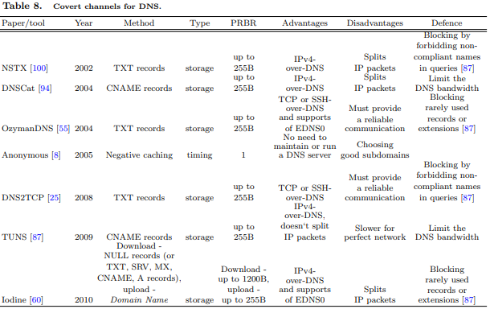

Domain Name System (DNS). DNS is very suitable for creating covert channels for tunnelling other protocols,
for example IP, TCP or UDP over DNS. Specially interested are NS, CNAME and TXT records with length up
to 255B, and experimental NULL record with length up to 65536B (300B-1200B in implementations).
Two IPv4-over-DNS tools implemented in C, are Nameserver Transfer Protocol - NSTX [100] and Iodine [60].
Both split IP packets into several chunks, send them separately, then reassemble the IP packets at the other
endpoint. For encoding data into queries, NSTX uses a non-compliant Base64 encoding, and replies are carried
with TXT records. Iodine has support for a DNS extension EDNS0, which allows to use DNS packets longer
than the initially chosen 512-byte limit. For download traffic, Iodine uses NULL records (or TXT, SRV, MX,
CNAME, A records), and upload traffic is gzziped and Base32 or non-compliant Base64 encoded in the Domain
Name field from DNS Resource record. DNSCat [94] is a Java IPv4-over-DNS tool which uses CNAME records
for download traffic. TUNS [87] is another IPv4-over-DNS tool (in Ruby), which doesn‘t split IP packets. It uses
only CNAME records with Base32 encoding for sending data, which are frequently used in normal DNS traffic,
so TUNS traffic is harder to filter. TUNS uses caching to resolve the problem with duplicated DNS queries and
experiments showed that for perfect network conditions it is the slowest implementation, but in presence of packet
loss, performs much better.
OzymanDNS [55] and DNS2TCP [25] are two tools for tunnelling TCP or SSH over DNS, which use TXT records.
Their main drawback is that they must provide a reliable communication channel over an unreliable protocol,
and thus deal with losses, retransmissions, reordering and duplication of DNS packets.
Covert timing channel for DNS, which uses DNS negative caching, i.e. caching NXDOMAIN answer for nonexistent
domains, is given in [8]. By querying a previously agreed set of subdomains of one non-existent domain,
two hosts can covertly exchange messages, treating each cached subdomain as a binary one, and non-cached domain as binary zero. There is no need hosts to maintain or run a DNS server, and no need to know each other
addresses.
Another interesting area for deployment of covert channels are real-time applications over IP, as for example
Voice over IP (VoIP), on-line multi-player games, streaming live A/V, etc. In these applications, usually audio
and/or video is transmitted using separated streams by Real-Time Transport Protocol (RTP), supported by its
companion RTP Control Protocol (RTCP). One part of the RTP works in the Transport layer above UDP, and
second in the Application layer. On the other hand, VoIP has signalling phase at the beginning (before audio
transfer using RTP), which is carrying by some signalling protocol, like Session Initiation Protocol (SIP). SIP
usually is accompanied by some protocol for description of multimedia sessions, like Session Description Protocol
(SDP).
